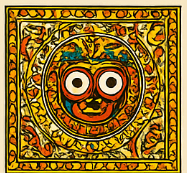

Pattachitra is a traditional scroll painting style from Odisha and West Bengal, known for its intricate details, mythological themes, and natural colors on cloth or dried palm leaves.
1. Origins (5th Century BCE – Ancient Era)
I Pattachitra originated in Odisha and West Bengal, closely linked with the Jagannath temple in Puri.
II The name comes from 'Patta' (cloth) and 'Chitra' (painting), meaning 'painting on cloth'.
III Artists known as 'Chitrakaras' created paintings depicting Hindu gods and epics like Ramayana and Mahabharata.
2. Medieval Period (11th–16th Century)
I The art flourished under temple patronage.
II Paintings were offered to Lord Jagannath when the main idols were kept away during the ritual bath (Anavasara period).
III Themes centered on Krishna Leela, Vishnu avatars, and temple rituals.
3. Colonial Period (17th–19th Century)
I Pattachitra continued in rural areas despite less royal patronage.
II Artists started creating smaller paintings for pilgrims as souvenirs.
4. Modern Period (20th Century–Present)
I Government and NGOs promoted the art for cultural preservation.
II Artists like Raghunath Mohapatra and Ananta Maharana brought global recognition.
III Now used in wall murals, sarees, and digital formats.
I 'Raghunath Mohapatra' – Padma Shri & Padma Bhushan awardee, famous for temple architecture & Pattachitra promotion.
II 'Ananta Maharana' – Known for intricate detailing in traditional Pattachitra art.
III 'Bijay Parida' – Renowned for combining traditional themes with modern elements.
1. Canvas: Cloth coated with chalk & tamarind seed paste, polished before painting.
2. Colors: 100% natural colors made from stones, seeds, and flowers.
3. Themes: Hindu gods, Jagannath deities, Krishna Leela, Ramayana, Mahabharata.
4. Style: Bold lines, decorative borders, floral motifs, and no empty spaces.
5. Technique: Use of coconut shell brushes & bamboo sticks.